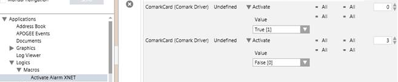
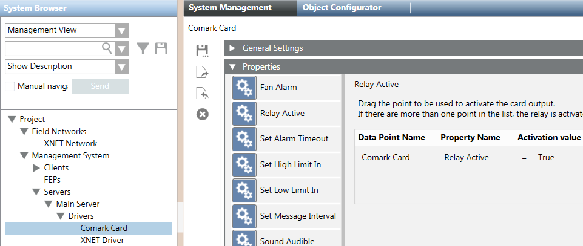

Configuring Manual Alarm Activation
Scenario
You want to manually activate an alarm on fire panels from Desigo CC, for example in case of evacuation. You can do that in two ways:
- Program a pseudo-point on the fire panel to generate an alarm, and then command the pseudo-point from the management station (recommended). Refer to the fire panel tool documentation for the pseudo-point programming. In Desigo CC, you can control the pseudo-point from System Manager, in textual mode or from a graphic.
- Program the relay output of the Comark monitor card to switch an input on the fire panels equipped with an HTRI/TRI or FDCIO interface module. To do that, complete the following procedure.
Configure Manual Alarm Activation via Comark Relay Output
- Wire the relay output pin OUT1_NO and OUT1-C to an HTRI/TRI or FDCIO input pin.
- In the fire panel tool, configure the HTRI/TRI or FDCIO input for alarm signaling.
- In Desigo CC, create a macro to activate the relay output with the following commands (see figure Macro to Manually Activate an Alarm):
- Activate, with value True and no initial delay.
- Deactivate, with value False and initial delay of 3 seconds, to remove the alarmed condition and allow for acknowledging and resetting the alarm.
- On the Comark monitor card, configure a trigger condition for the relay output to be activated when the Relay Active property is equal to True (see Figure Trigger to Activate the Comark Card Relay Output):
a. Select the Comark monitor card node.
b. In the Properties expander of the System Management tab, drag the Relay Active property to the table on the right.
c. Set the Activation value of the Relay Active property to True.

